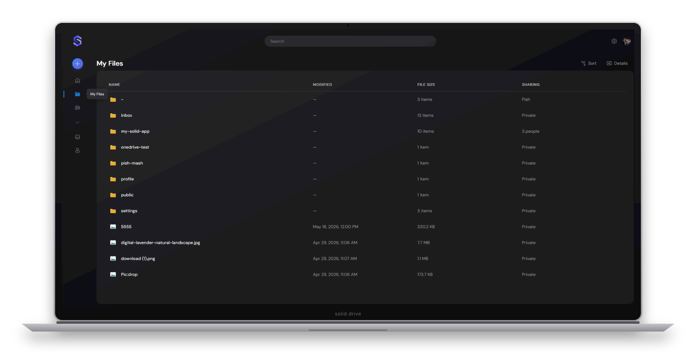

Sign in with any Solid provider
Log in through any OIDC-compliant Solid identity provider, or your own self-hosted server. Switch the UI between English and German at runtime.
Built on the Solid Protocol
Solid.Drive is a desktop-class file manager for your Solid Pod. Browse, upload and share your data from a familiar, OneDrive-inspired interface — without ever handing control of it to a platform. This is digital sovereignty, by design: your data lives in your Pod, and you decide who may read it.

On today's web, your files usually live on someone else's servers under someone else's terms. Solid flips that around: your data sits in a personal online datastore — a Pod — that you own and host wherever you like. Solid.Drive gives that Pod a friendly face, so managing sovereign data feels as easy as any cloud drive, while authentication, storage and access control stay entirely under your command.
Log in through any OIDC-compliant Solid identity provider, or your own self-hosted server. Switch the UI between English and German at runtime.
Choose at runtime between a classic two-pane explorer and a OneDrive-style shell with Home, My Files, Shared, Requests and People views — your preference is remembered.
Drag & drop or pick any file type. Each upload stores the binary plus an RDF metadata document, with a progress tray and per-file retry.
Walk the full Pod directory tree with breadcrumbs and deep links. Preview images, video, audio, PDFs and text without a single byte leaving your browser.
Share owned files with contacts from your Solid profile. ACLs and per-contact shared catalogs stay in sync, and access is revoked just as cleanly as it is granted.
MIME types map to schema.org classes, SHACL shapes validate uploads, and the catalog is maintained with SPARQL PATCH — the Pod stays clean and semantically rich.
Solid.Drive is a Progressive Web App: install it from Chrome or Edge and launch it in its own standalone window, separate from your browser tabs.
Files that already lived on your Pod before you ever opened Solid.Drive show up too, with download access — nothing is left behind.